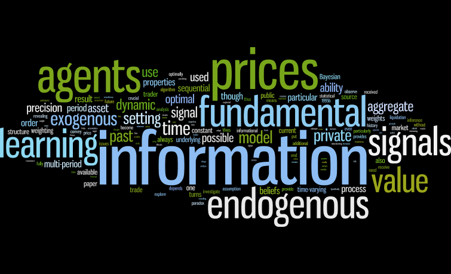

This picture downloaded from Michele Berardi.
This personal website forked from Tao Wang.
The Macro Field
Some
- Aadland, David
- Acemoglu, Daron
- Adam, Klaus
- Afrouzi, Hassan
- Angeletos, George-Marios
- Azariadis, Costas
- Baley, Isaac
- Blinder, Alan S.
- Brainard, William
- Carlin, Wendy
- Carroll, Christopher
- Christiano, Lawrence
- Cochrane, John H.
- Coibion, Olivier
- Collard, Fabrice
- Edmond, Chris
- Ellison, Martin
- Fernández-Villaverde, Jesús
- Gorodnichenko, Yuriy
- Hellwig, Christian
- Kurlat, Pablo
- La'O, Jennifer
- Liu, Zheng
- Lorenzoni, Guido
- Lucas, Robert E.
- Luo, Yulei
- Moll, Benjamin
- Miao, Jianjun
- Milani, Fabio
- Nimark, Kristoffer
- Pfeifer, Johannes
- Reis, Ricardo
- Sargent, Thomas J.
- Sastry, Karthik
- Sims, Christopher A.
- Sims, Eric
- Smith, Gregor W.
- Svensson, Lars E.O.
- Veldkamp, Laura
- Wälde, Klaus
- Whelan, Karl
- Woodford, Michael
- Xie, Danyang
- Zha, Tao
- Zhang, Jun
-
More
The Money and Finance Field
Some
More
The Grading Journals
Some
More